1. 팔란티어의 글로벌 기술 스택
팔란티어가 데이터·온톨로지·AI·배포를 통합한 글로벌 기술 플랫폼이라면, YABOAZ는 그 기술을 현장 문제 해결과 FDE 실행, 교육, 검증, 자산화로 연결하는 한국형 실행 플랫폼입니다.
팔란티어는 기술 플랫폼이고, YABOAZ는 실행 운영체계입니다.
| 구성요소 | 핵심 역할 |
|---|---|
| Gotham | 임무·안보·상황 대응 |
| Foundry | 기업 운영·데이터·온톨로지 |
| Apollo | 배포·운영·업데이트 |
| AIP | 생성형 AI·Agent·자동화 |
| FDE | 고객 현장에 적용하고 성과를 만드는 실행 인력 |
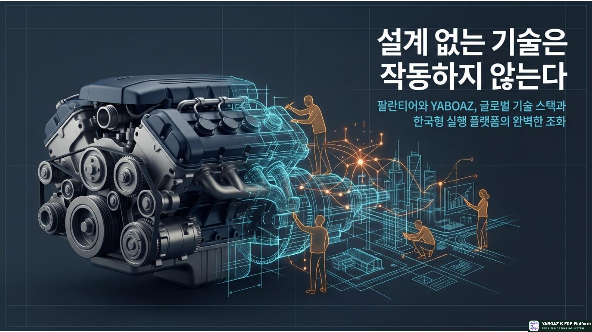
2. YABOAZ의 정체성
YABOAZ는 팔란티어의 글로벌 소프트웨어를 복제하는 것을 목표로 하지 않습니다. 현장의 실제 문제를 발견하고 구조화하며, AI 판단과 업무 규칙, 워크플로와 화면을 연결하고, MVP를 빠르게 구현해 현장에서 검증한 뒤 반복 가능한 해결책을 플랫폼 자산으로 만드는 실행 계층입니다.
YABOAZ는 현장의 신호를 실행 가능한 자산으로 전환하는 K-FDE 플랫폼입니다.
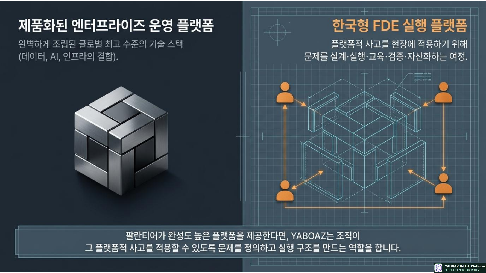
3. 팔란티어와 YABOAZ의 본질적 차이
| 구분 | 팔란티어 | YABOAZ |
|---|---|---|
| 기본 성격 | 글로벌 기술 플랫폼 | 한국형 FDE 실행 플랫폼 |
| 출발점 | 데이터와 운영체계 | 현장 문제와 실행 과제 |
| 중심 자산 | 소프트웨어·온톨로지·데이터 플랫폼 | 문제 해결 경험·템플릿·교육·워크플로 |
| 구현 | 전문 플랫폼 위 구축 | 플랫폼과 바이브코딩으로 빠른 MVP |
| 검증 | 고객 Bootcamp·실제 운영 | MVP·Bootcamp·교육 프로젝트·KPI |
| 확장 | 플랫폼 기능과 고객 사례 확장 | 현장 해결책을 재사용 자산으로 전환 |
현장에는 문제 정의 불명확, 데이터 소유권 분산, 현업과 IT의 언어 차이, 미문서화된 업무 규칙, 승인 책임 부재, 사용자 외면, 성과지표 부재, 지식 재사용 실패가 존재합니다. YABOAZ는 이러한 실행 공백을 해결합니다.
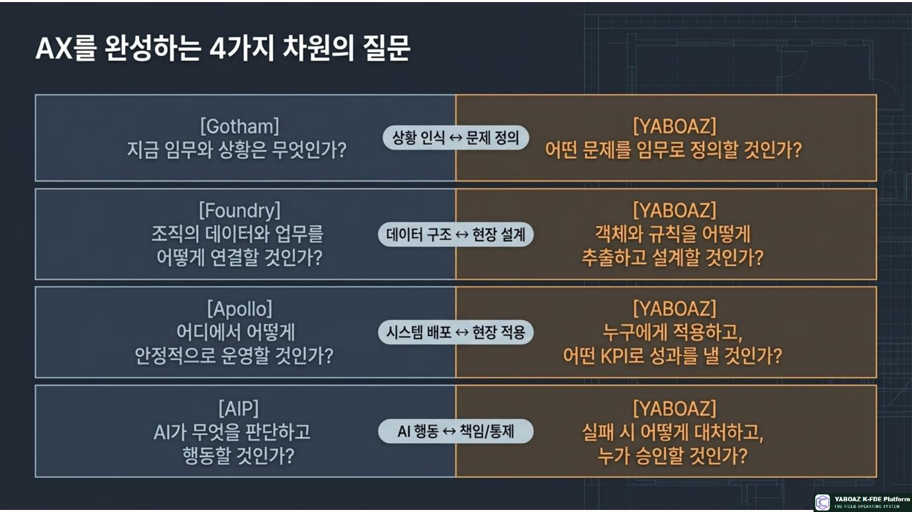
4. 팔란티어와 YABOAZ의 관계
Gotham · Foundry · Apollo · AIP
↓
K-FDE 실행 방법론
↓
YABOAZ 현장 문제해결 플랫폼
↓
현장 적용 · MVP · Bootcamp · KPI
↓
재사용 가능한 플랫폼 자산
| 계층 | 역할 |
|---|---|
| 글로벌 기술 계층 | Palantir, LLM, 클라우드, 데이터 플랫폼 |
| 실행 설계 계층 | YABOAZ, K-FDE Framework, 온톨로지 설계 |
| 현장 적용 계층 | FDE, 도메인 전문가, 업무 담당자 |
| 검증 계층 | MVP, Bootcamp, KPI, 사용자 피드백 |
| 자산화 계층 | 템플릿, 워크플로, Agent 사양, 운영 매뉴얼 |
YABOAZ는 팔란티어와 경쟁하기보다 고도화된 기술이 한국 기업과 조직에서 실제 성과로 이어지도록 하는 실행 계층으로 기능할 수 있습니다.
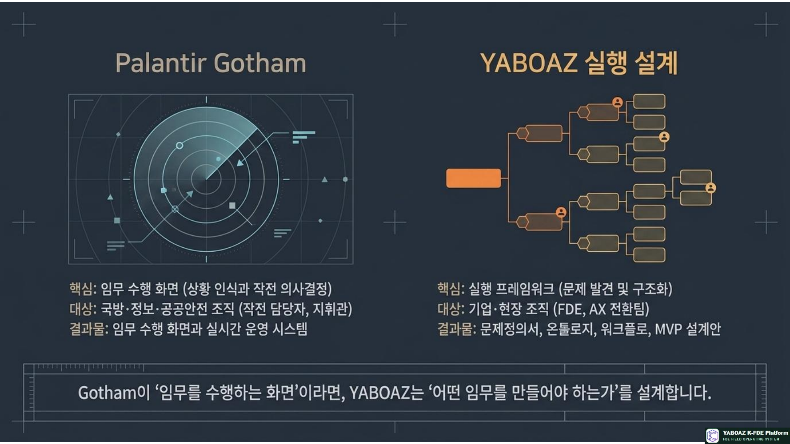
5. YABOAZ의 6단계 자산화 프로세스
1단계. 현장 문제 관찰
FDE는 문서에 적힌 공식 프로세스가 아니라 실제 업무 동선, 반복 수작업, 병목, 우회 업무, 인계 문제, 암묵지, 오류와 긴급 대응을 관찰합니다.
2단계. 온톨로지 구조화
사람·업무·자원·데이터·사건을 객체·속성·관계·상태·이벤트·규칙·행동으로 구조화합니다. 온톨로지는 AI가 현장을 이해하기 위한 의미 구조입니다.
3단계. 워크플로와 판단 설계
어떤 사건이 발생하고, 누가 판단하며, AI가 무엇을 추천하고, 누가 승인하고, 어떤 행동이 실행되며, 결과와 예외를 어디에 기록할지 설계합니다.
4단계. MVP 구현과 현장 검증
하나의 업무 화면, AI 판단 시나리오, 알림, 승인 절차, KPI 대시보드처럼 가장 중요한 문제 하나를 최소 실행 해법으로 만들고 실제 사용성·시간·오류·충돌을 검증합니다.
5단계. SaaS 기능 제품화
공통 객체·질문·AI 규칙·승인 절차·알림·KPI·화면·매뉴얼은 템플릿과 기능으로 표준화하고, 고객 조직·공정·시스템·법규·권한·예외·KPI는 설정과 확장으로 남깁니다.
6단계. 플랫폼 자산 확장
온톨로지, Agent 사양, 의사결정 규칙, 워크플로, 화면, KPI, 운영 매뉴얼, 교육 콘텐츠와 체크리스트를 다른 현장에 재조합합니다.
공통 구조는 재사용하되, 현장의 차이는 설정과 확장으로 반영해야 합니다.
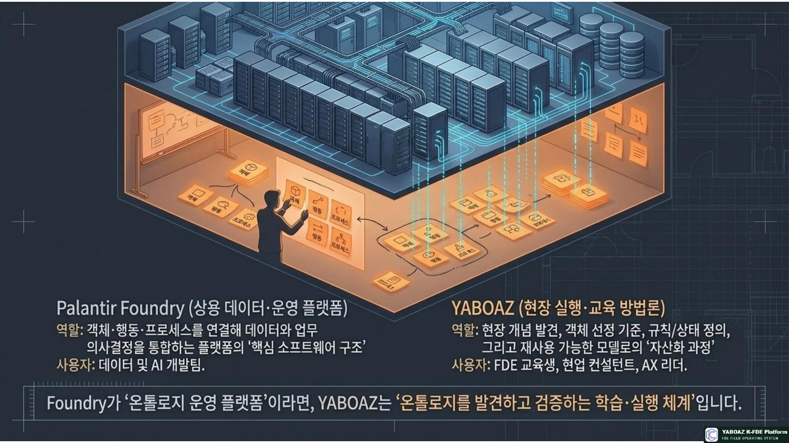
6. YABOAZ의 핵심 자산 구성
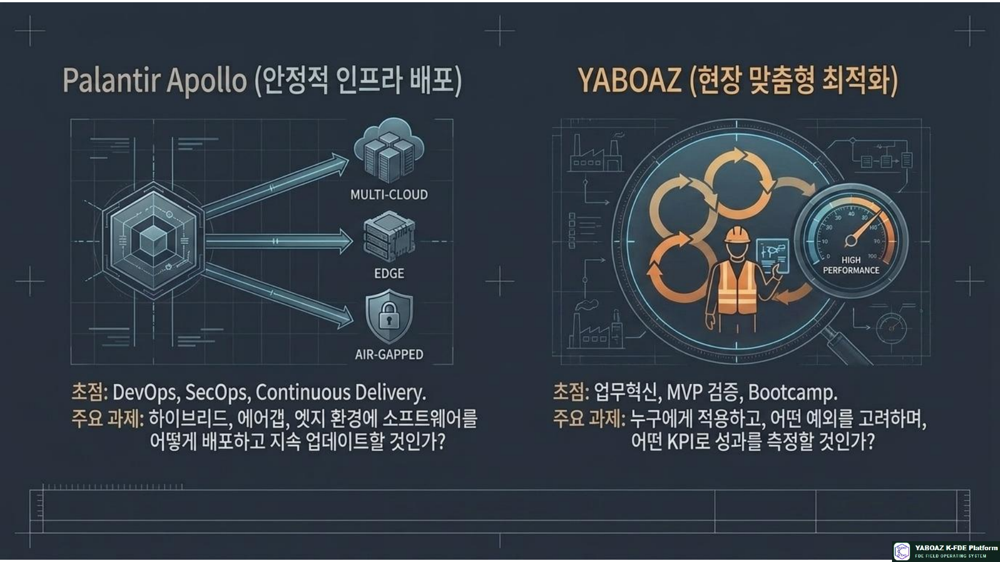
7. 핵심 차별성
- 현장 문제에서 시작: 현장 문제 → 업무 맥락 → 데이터와 관계 → AI 판단 → 실행
- AI보다 실행 중시: AI 추천·인간 검토·승인·명령·기록·KPI를 함께 설계
- 인간 승인 기본값: 증거 → AI 추천 → 인간 검토 → 승인 게이트 → 행동 실행
- 작은 실행 반복: 작은 문제와 MVP를 실제 사용하고 성과를 측정
- 경험의 조직 자산화: 질문·온톨로지·규칙·Agent·워크플로·KPI·매뉴얼 축적
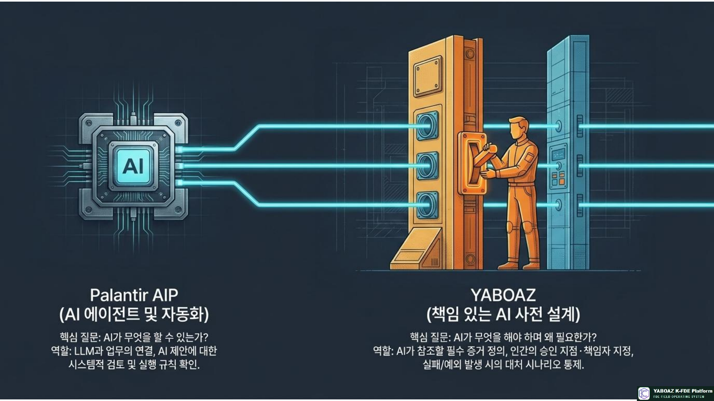
8. 팔란티어 기술 스택과 YABOAZ 실행 흐름의 결합
- YABOAZ FDE가 현장 문제를 발견합니다.
- 객체·속성·관계·상태·이벤트·규칙·행동으로 구조화합니다.
- Foundry 또는 기존 데이터 플랫폼과 ERP·CRM·생산·문서·센서 데이터를 연결합니다.
- 온톨로지 기반 업무 모델을 구축합니다.
- AIP 또는 AI Agent가 분석·추천하도록 설계합니다.
- YABOAZ가 인간 승인과 예외 규칙을 설계합니다.
- MVP와 Bootcamp로 검증합니다.
- Apollo 또는 운영 인프라 위에서 배포·업데이트합니다.
- 결과를 YABOAZ 자산 라이브러리에 저장합니다.
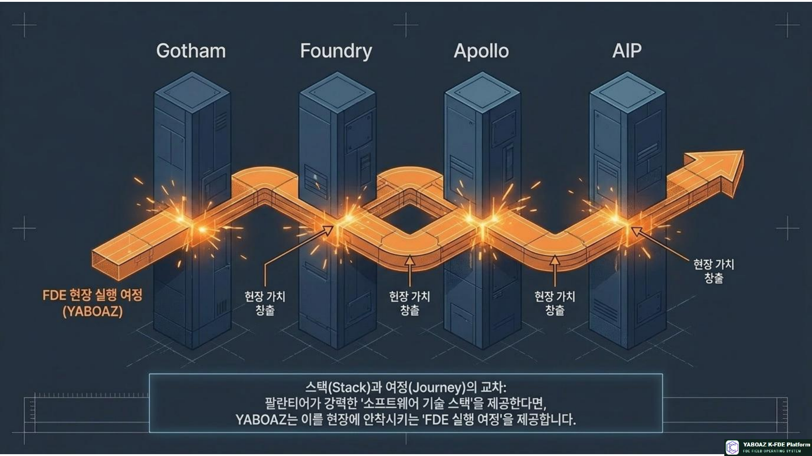
9. YABOAZ는 팔란티어의 대체재인가?
현재 YABOAZ를 팔란티어의 직접 대체재라고 표현하는 것은 신중해야 합니다. 팔란티어는 글로벌 플랫폼, 보안·배포, 정부·국방 실적, 데이터 통합과 온톨로지 기술을 갖고 있습니다. YABOAZ는 한국어 기반 문제 정의, 국내 조직문화, 현실적인 도입 경로, FDE 교육, 바이브코딩 MVP, 산업별 템플릿, 한국형 거버넌스와 변화관리에서 차별화될 수 있습니다.
YABOAZ는 팔란티어를 대체하는 플랫폼이 아니라, 유사한 실행 원리를 한국 현장에 적용하고 확산시키는 실행·교육·자산화 플랫폼입니다.
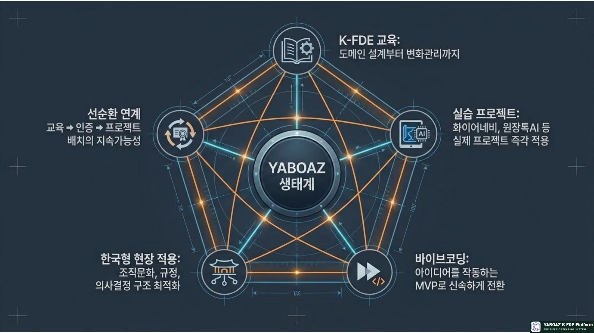
10. 한국 기업의 문제와 YABOAZ의 해결
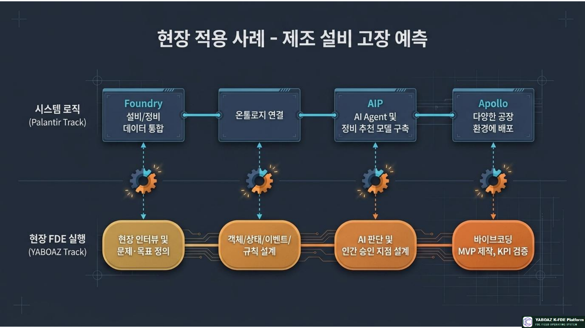
11. K-FDE와 YABOAZ의 관계
K-FDE는 현장 관찰자, 문제 구조화자, 도메인 분석가, 온톨로지 설계자, AI Agent 기획자, 워크플로 설계자, MVP 개발자, 변화관리자, 성과 측정자, 플랫폼 자산화 담당자입니다.
12. 성장 플라이휠과 운영 모델
13. 도입 단계별 권장 전략
- 경영진 AX 교육과 현업·IT 공동 워크숍으로 공통 언어를 만듭니다.
- 4~8주 안에 MVP가 가능하고 반복·측정·확장 가능한 문제를 하나 선정합니다.
- 실제 데이터와 사용자가 참여하는 MVP·Bootcamp를 실행합니다.
- 공통 객체·질문·규칙·Agent·워크플로·KPI·매뉴얼을 자산화합니다.
- 동일 기업의 부서, 동일 산업의 기업, 유사 업무 업종과 공급망으로 수평 확장합니다.
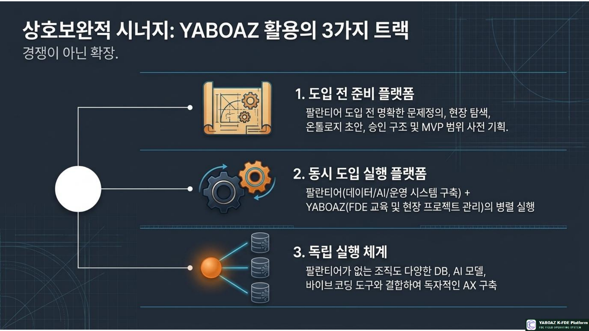
14. 반드시 관리해야 할 주의점
- 공식 제휴나 연동이 확정되지 않았다면 팔란티어 기반·대체재 표현을 과장하지 않습니다.
- 실제 사용·KPI 개선·적용성·문서화·예외·보안이 확인된 결과만 자산으로 등록합니다.
- 공통 구조는 표준화하고 업무 규칙은 설정 가능하게 하며 예외는 확장 모듈로 관리합니다.
- 저위험 반복 업무는 자동화할 수 있지만 중위험은 조건부 승인, 고위험과 법적·윤리적 판단은 인간 책임을 유지합니다.
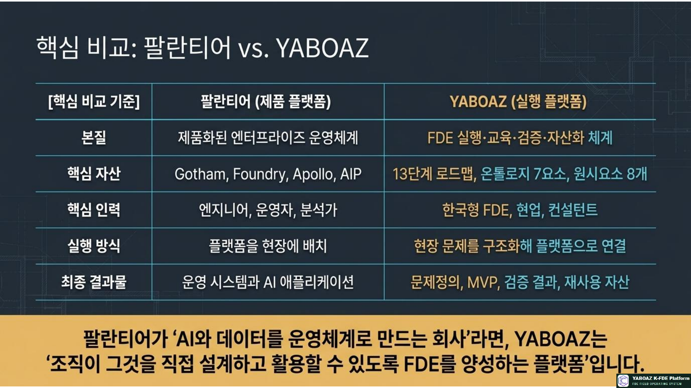
15. 최종 결론
YABOAZ = 한국형 현장 실행·교육·검증·자산화 플랫폼
K-FDE = 두 영역을 연결하는 실행 인력과 방법론
팔란티어가 세계적 기술 플랫폼이라면, YABOAZ는 그 기술을 한국 현장의 성과로 바꾸는 실행 플랫폼입니다.
YABOAZ의 최종 목표는 AI 기능을 제공하는 데 그치지 않고, 현장에서 발견한 문제를 구조화하고 AI와 사람이 함께 실행하며 검증된 해결책을 조직의 반복 가능한 자산으로 축적하는 것입니다.
현장 관찰 → 문제 구조화 → 온톨로지 설계 → AI 판단 → 인간 승인 → 워크플로 실행 → MVP 검증 → KPI 측정 → SaaS 기능화 → 플랫폼 자산화 → 다음 프로젝트 확장